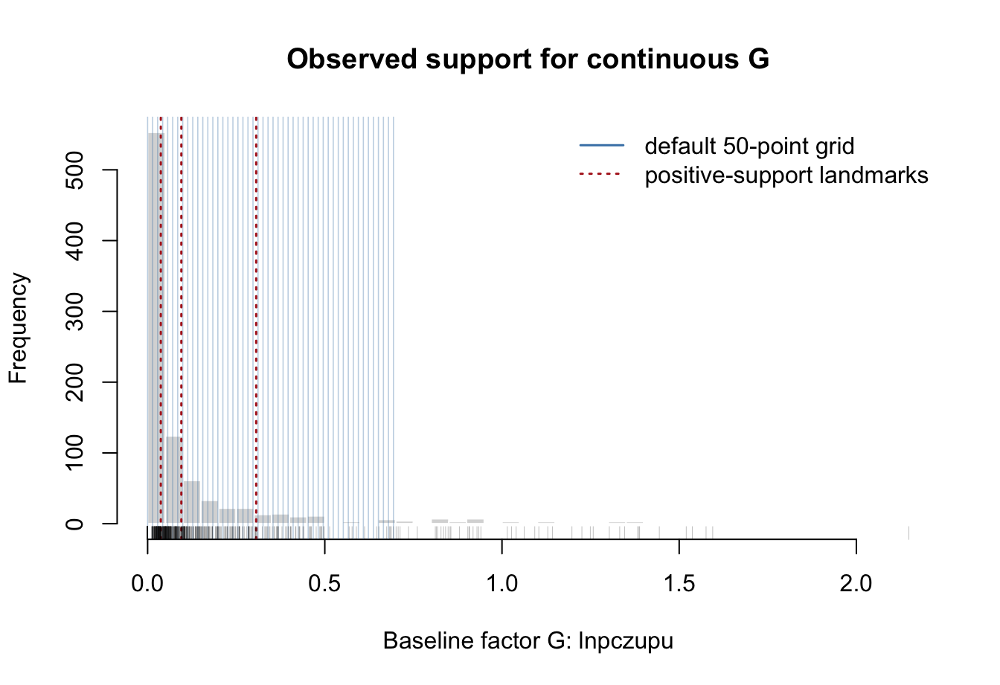
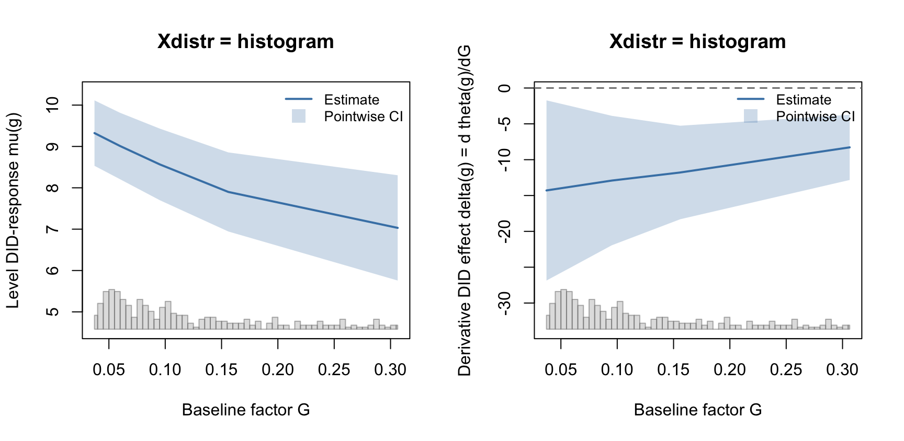
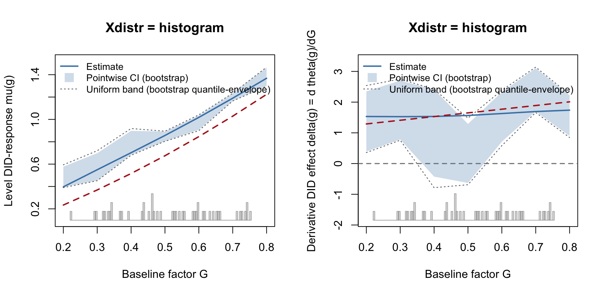
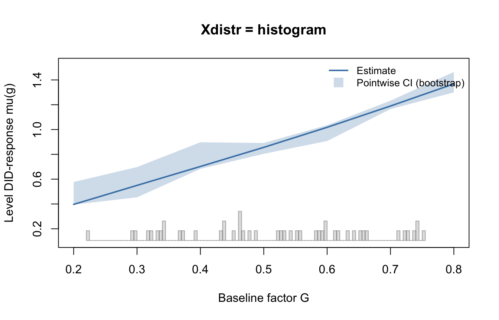

library(fdid)
data(fdid)
mortality$uniqueid <- paste(
as.character(mortality$provid),
as.character(mortality$countyid),
sep = "-"
)
covar <- c("avggrain", "nograin", "urban", "dis_bj", "dis_pc",
"rice", "minority", "edu", "lnpop")
tr_period <- 1958:1961
ref_period <- 1957
s_cont <- fdid_prepare(
data = transform(mortality, G_cont = lnpczupu),
Y_label = "mortality",
X_labels = covar,
G_label = "G_cont",
unit_label = "uniqueid",
time_label = "year"
)4 Kernel Estimator for Continuous G
This chapter gives a focused workflow for method = "kernel" with continuous baseline factor G. The structure follows the practical style used in the interflex tutorial and in Liu, Liu, and Xu (2025): diagnose support first, estimate the curve, inspect uncertainty, then report specific contrasts or derivatives.
The kernel estimator is useful when the main empirical object is a smooth continuous-\(G\) curve rather than a single slope. It estimates two event-period objects:
- the level curve, \(\mu(g)\), the local FDID response at a value of
G; - the derivative curve, \(\delta(g)\), the local slope of that response.
Unlike the DML estimators in Chapter Chapter 5, the kernel estimator is a fused local smoother: the local linear fit, support weighting, and curve aggregation are part of one estimator.
4.1 Data Setup And Support
The famine mortality example has a mass point at zero in lnpczupu. For a smooth continuous-\(G\) curve, it is usually better to report an interior region with enough positive support rather than force the kernel smoother to explain the mass point and far tail in one plot.
g_positive <- s_cont$G[s_cont$G > 0]
eval_g_kernel <- as.numeric(stats::quantile(
g_positive,
probs = c(0.20, 0.35, 0.50, 0.65, 0.80),
na.rm = TRUE
))
kernel_landmarks <- as.numeric(stats::quantile(
g_positive,
probs = c(0.20, 0.50, 0.80),
na.rm = TRUE
))
support_summary <- data.frame(
quantity = c("n units", "share G = 0", "20% positive support",
"80% positive support", "grid size"),
value = c(nrow(s_cont), mean(s_cont$G == 0), min(eval_g_kernel),
max(eval_g_kernel), length(eval_g_kernel))
)
knitr::kable(support_summary, digits = 4)| quantity | value |
|---|---|
| n units | 921.0000 |
| share G = 0 | 0.4473 |
| 20% positive support | 0.0372 |
| 80% positive support | 0.3063 |
| grid size | 5.0000 |
hist(s_cont$G, breaks = 35, col = "gray85", border = "white",
xlab = "Baseline factor G: lnpczupu",
main = "Observed support for continuous G")
abline(v = eval_g_kernel, col = "steelblue", lwd = 1.5)
abline(v = kernel_landmarks, col = "firebrick", lty = 3, lwd = 1.5)
rug(s_cont$G, col = grDevices::adjustcolor("black", 0.25))
legend("topright",
legend = c("estimation grid", "reporting landmarks"),
col = c("steelblue", "firebrick"), lty = c(1, 3), lwd = 1.5,
bty = "n")
The eval_g grid is an estimation grid, not a plotting-only option. If five values are supplied, fdid() estimates five local curve points. For publication figures, use a denser grid over the region you intend to interpret.
4.2 Basic Kernel Fit
The next fit uses a fixed bandwidth h0 so that the tutorial renders quickly and reproducibly. Leaving h0 = NULL asks the package to select the baseline bandwidth by cross-validation.
fit_kernel_fast <- fit_fdid(
s_cont,
tr_period = tr_period,
ref_period = ref_period,
method = "kernel",
eval_g = eval_g_kernel,
h0 = 0.18,
K_folds = 3,
vartype = "robust"
)
knitr::kable(event_table(fit_kernel_fast, "kernel robust"), digits = 3)| fit | Estimate | Std.Error | CI_Lower | CI_Upper | note |
|---|---|---|---|---|---|
| kernel robust | -8.516 | 2.841 | -14.085 | -2.947 |
The scalar event row is a compact summary. For the kernel estimator, the main objects are the stored curve arrays.
if (!is_fit_error(fit_kernel_fast)) {
knitr::kable(kernel_curve_table(fit_kernel_fast), digits = 3)
}| G | mu_hat | se_mu | delta_hat | se_delta |
|---|---|---|---|---|
| 0.037 | 9.323 | 0.404 | -14.291 | 6.412 |
| 0.060 | 9.013 | 0.410 | -13.755 | 5.716 |
| 0.095 | 8.567 | 0.442 | -12.913 | 4.609 |
| 0.156 | 7.901 | 0.488 | -11.785 | 3.329 |
| 0.306 | 7.031 | 0.649 | -8.279 | 2.322 |
4.3 Level And Derivative Curves
plot(type = "curve") draws the stored curve values. Use curve = "level" for the FDID response curve and curve = "derivative" for the local slope.
if (!is_fit_error(fit_kernel_fast)) {
old_par <- par(mfrow = c(1, 2))
plot(fit_kernel_fast, type = "curve", curve = "level",
interval = "pointwise", Xdistr = "histogram",
support.panel = "embedded",
main = "Xdistr = histogram")
plot(fit_kernel_fast, type = "curve", curve = "derivative",
interval = "pointwise", Xdistr = "histogram",
support.panel = "embedded",
main = "Xdistr = histogram")
par(old_par)
}
Support displays are descriptive. They show where observed values of G lie inside the plotted window; they do not change the stored estimates. This estimator chapter uses one consistent histogram display. Chapter Chapter 6 shows the alternative density, rug, none, separate-panel, marker, and contrast plot options.
4.4 Bootstrap Pointwise And Uniform Bands
For kernel inference, vartype = "robust" gives analytical pointwise normal intervals. With vartype = "bootstrap", the package stores bootstrap replicate curves, pointwise bootstrap percentile intervals, curve covariance matrices, and finite-grid bootstrap quantile-envelope bands.
The rendered example below uses a small synthetic dataset so the bootstrap can run quickly. In an applied analysis, use many more bootstrap replications. The band shown by interval = "both" is a bootstrap quantile-envelope band; it is not a studentized sup-\(t\) band.
n_kernel <- 80
time_kernel <- 1:4
G_kernel <- runif(n_kernel)
X_kernel <- rnorm(n_kernel)
kernel_panel <- data.frame(
id = rep(seq_len(n_kernel), each = length(time_kernel)),
time = rep(time_kernel, times = n_kernel),
G = rep(G_kernel, each = length(time_kernel)),
x1 = rep(X_kernel, each = length(time_kernel))
)
kernel_panel$Y <- with(
kernel_panel,
0.5 * x1 + 0.1 * time +
ifelse(time >= 3, (time - 2) * (0.7 * G + 0.4 * G^2), 0) +
rnorm(nrow(kernel_panel), sd = 0.15)
)
s_kernel_sim <- fdid_prepare(
data = kernel_panel,
Y_label = "Y",
X_labels = "x1",
G_label = "G",
unit_label = "id",
time_label = "time"
)
eval_g_sim <- seq(0.2, 0.8, length.out = 7)kernel_boot_draws <- if (identical(tolower(Sys.getenv("FDID_TUTORIAL_HEAVY")),
"true")) 99L else 9L
fit_kernel_boot <- fit_fdid(
s_kernel_sim,
tr_period = 3:4,
ref_period = 2,
method = "kernel",
eval_g = eval_g_sim,
h0 = 0.25,
vartype = "bootstrap",
boot = kernel_boot_draws
)
if (!is_fit_error(fit_kernel_boot)) {
data.frame(
band_method = fit_kernel_boot$curve_event$simultaneous_band_method,
effective_bootstrap_draws = fit_kernel_boot$curve_event$delta_uniform_n_boot_eff
)
}if (!is_fit_error(fit_kernel_boot)) {
true_level <- 1.5 * (0.7 * eval_g_sim + 0.4 * eval_g_sim^2)
true_deriv <- 1.5 * (0.7 + 0.8 * eval_g_sim)
old_par <- par(mfrow = c(1, 2))
plot(fit_kernel_boot, type = "curve", curve = "level",
interval = "both", show.uniform.CI = TRUE,
Xdistr = "histogram", support.panel = "embedded",
main = "Xdistr = histogram")
lines(eval_g_sim, true_level, col = "firebrick", lty = 2, lwd = 2)
plot(fit_kernel_boot, type = "curve", curve = "derivative",
interval = "both", show.uniform.CI = TRUE,
Xdistr = "histogram", support.panel = "embedded",
main = "Xdistr = histogram")
lines(eval_g_sim, true_deriv, col = "firebrick", lty = 2, lwd = 2)
par(old_par)
}
To hide the uniform band while keeping pointwise intervals, use show.uniform.CI = FALSE, mirroring the interflex plotting workflow.
if (!is_fit_error(fit_kernel_boot)) {
plot(fit_kernel_boot, type = "curve", curve = "level",
show.uniform.CI = FALSE,
Xdistr = "histogram", support.panel = "embedded",
main = "Xdistr = histogram")
}
4.5 Reporting Contrasts And Derivatives
The curve is useful for diagnosis, but a write-up often needs a smaller number of quantities. fdid_contrast() reports level differences such as mu(g1) - mu(g0). fdid_derivative() reports a derivative at a fixed value of G.
if (!is_fit_error(fit_kernel_boot)) {
kernel_report <- rbind(
fdid_contrast(fit_kernel_boot, g0 = min(eval_g_sim), g1 = max(eval_g_sim)),
fdid_derivative(fit_kernel_boot, g0 = stats::median(eval_g_sim))
)
knitr::kable(
kernel_report[, c("target", "method", "g0", "g1", "estimate",
"std.error", "conf.low", "conf.high", "inference")],
digits = 3
)
}| target | method | g0 | g1 | estimate | std.error | conf.low | conf.high | inference |
|---|---|---|---|---|---|---|---|---|
| level contrast | kernel | 0.2 | 0.8 | 0.972 | 0.093 | 0.788 | 1.155 | vcov |
| derivative value | kernel | 0.5 | NA | 1.566 | 0.622 | 0.346 | 2.786 | vcov |
When bootstrap covariance matrices are available, exact-grid contrasts use the covariance identity V22 + V11 - 2 * V12. Otherwise the helper falls back to replicate curves, stored bands, or pointwise endpoint intervals and labels the inference source.
4.6 Option Checklist
kernel_options <- data.frame(
option = c("eval_g", "h0", "K_folds", "vartype", "boot",
"cluster_label", "curve", "interval", "show.uniform.CI",
"Xdistr", "support.panel", "diff.values"),
role = c(
"Evaluation grid; this is part of estimation.",
"Baseline bandwidth; NULL selects by cross-validation.",
"Number of folds for bandwidth cross-validation.",
"Use robust pointwise intervals or bootstrap curve inference.",
"Bootstrap replications for kernel replicate curves and bands.",
"Passed to fdid_prepare(); enables cluster bootstrap resampling.",
"Choose level, derivative, or both curves.",
"Choose pointwise intervals, uniform bands, both, or none.",
"Suppress stored uniform bands at plotting time.",
"Show histogram, density, rug, or no support display.",
"Draw support inside the curve panel or below it.",
"Mark reporting values of G on the plot."
)
)
knitr::kable(kernel_options)| option | role |
|---|---|
| eval_g | Evaluation grid; this is part of estimation. |
| h0 | Baseline bandwidth; NULL selects by cross-validation. |
| K_folds | Number of folds for bandwidth cross-validation. |
| vartype | Use robust pointwise intervals or bootstrap curve inference. |
| boot | Bootstrap replications for kernel replicate curves and bands. |
| cluster_label | Passed to fdid_prepare(); enables cluster bootstrap resampling. |
| curve | Choose level, derivative, or both curves. |
| interval | Choose pointwise intervals, uniform bands, both, or none. |
| show.uniform.CI | Suppress stored uniform bands at plotting time. |
| Xdistr | Show histogram, density, rug, or no support display. |
| support.panel | Draw support inside the curve panel or below it. |
| diff.values | Mark reporting values of G on the plot. |
For a substantive kernel analysis, the practical checklist is:
- inspect the support of
Gbefore choosing the grid; - avoid interpreting sparse tails or large mass points as smooth regions;
- report whether intervals are analytical pointwise or bootstrap pointwise;
- call the simultaneous band a bootstrap quantile-envelope band, not a studentized sup-\(t\) band;
- report key values with
fdid_contrast()orfdid_derivative()in addition to the plot.